A pocket pill case designed around one real user's fear of being seen taking medication in public.
Our fix-partner, "Jude," a young adult managing daily medication, was living with a pill container that "pops open due to its material choice and design," and skipped doses in public rather than risk being seen with an obviously medical object. The options he'd tried, in his own words, "all make me look like a grandpa."
Beyond the social discomfort, he had no reliable way to track whether he'd already taken a dose, and had improvised his own workaround: setting a vitamin gummy aside as a manual reminder. Our brief became a container discreet enough to use anywhere, durable enough to trust, and clear enough to remove the guesswork.
"…all make me look like a grandpa."
Jude, our fix-partner, on the pill containers he had tried
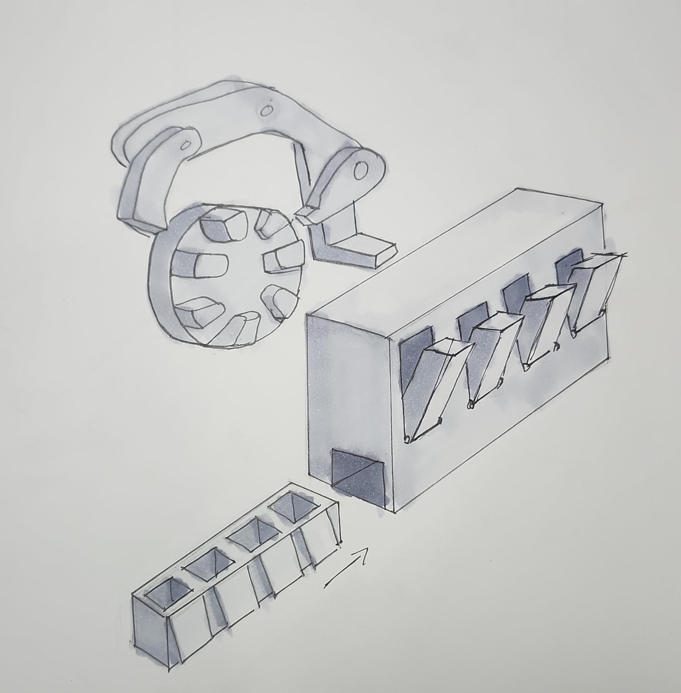
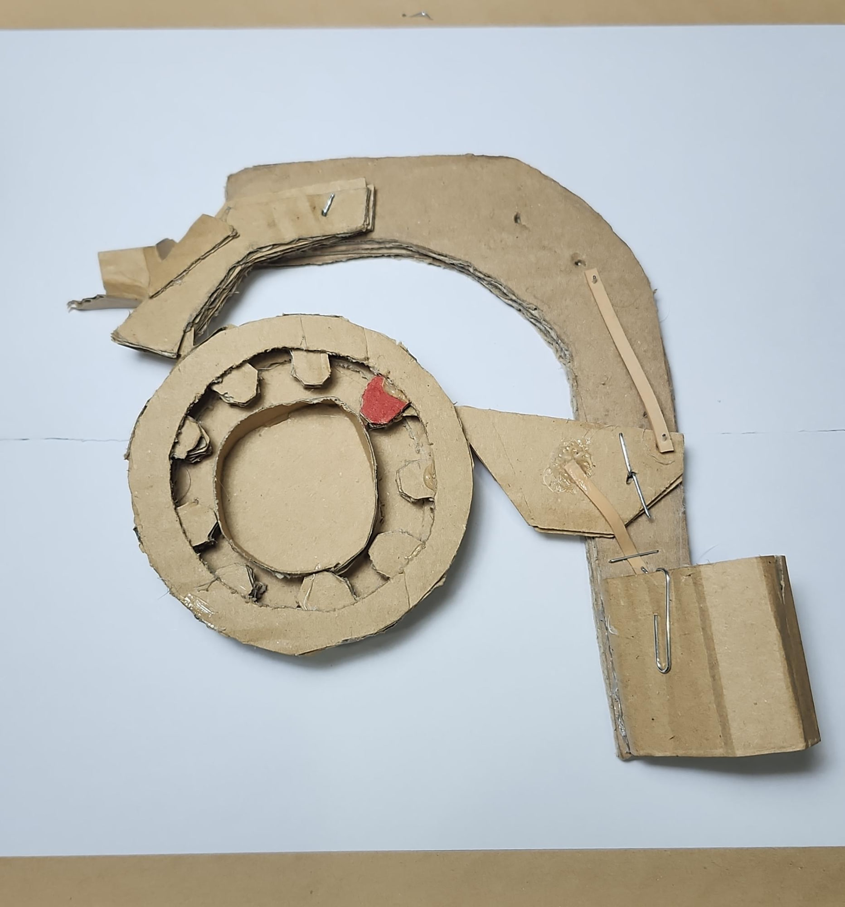
Our research combined one-on-one interviews, shadowing, and market analysis, narrowing the problem to three needs: protection, discretion, and tracking. Early concept exploration ranged from a simple modular case to "combo" products that folded the container into a wallet, bracelet, or water bottle. Jude rejected all of them, telling us a wallet would be "bulkier" and visible to "the teller or waiter." That feedback pushed our design back toward a standalone object.
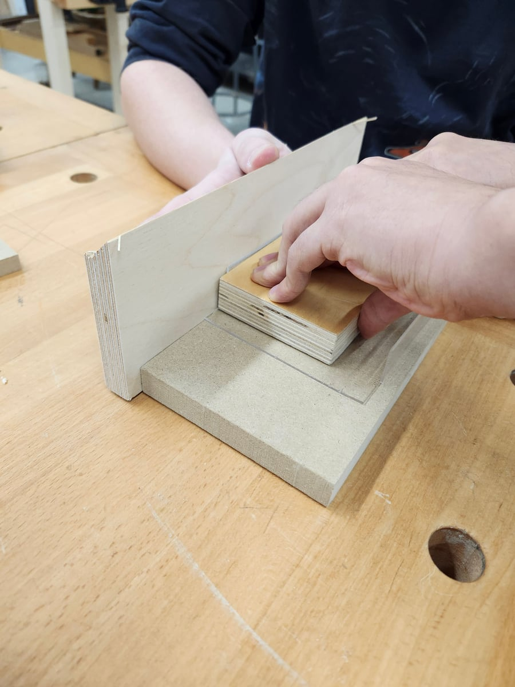
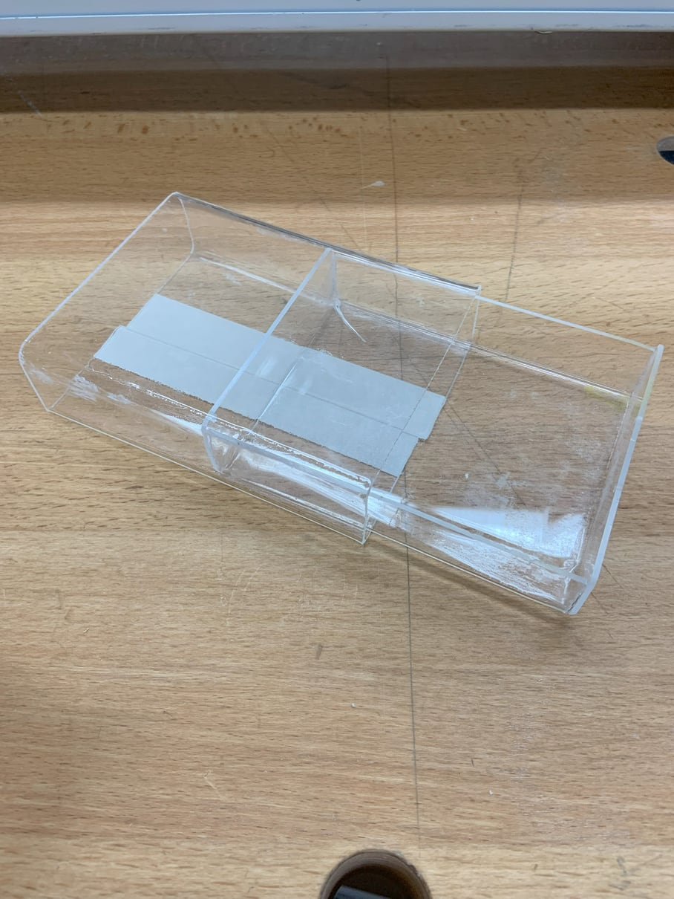
We moved through low-, mid-, and high-fidelity builds, heat-bending acrylic over a jig for the mid-fidelity shell and prototyping a touch-activated, app-programmable indicator light designed to reset automatically after each dose. I developed the interview questions we used with Jude, contributed through concept generation and iteration, and fabricated the final high-fidelity prototype myself.
ShellSafe isn't just the physical case: a companion app is where the indicator light actually gets configured. User testing surfaced that Jude "wouldn't mind an app just for setting the indicator resetting duration," so we designed and wireframed one in Adobe XD, screens shown below, letting him set the reset timing and light color to match how he actually wanted to be reminded.
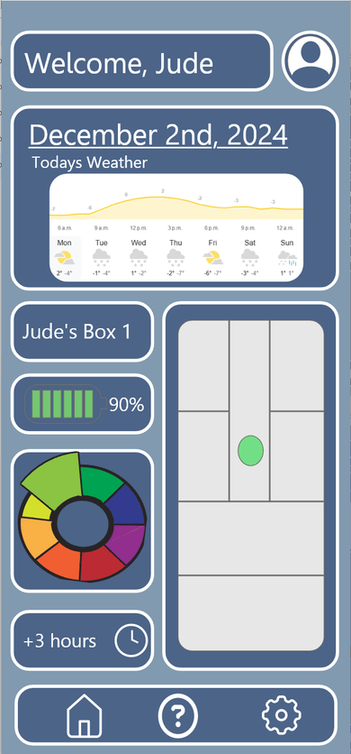
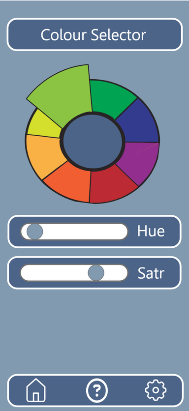
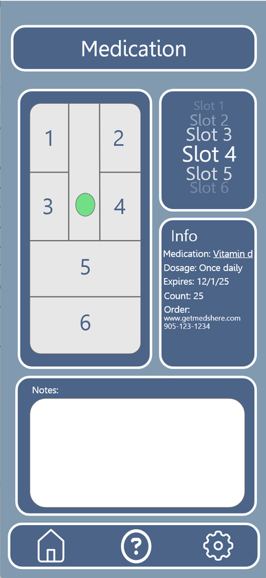
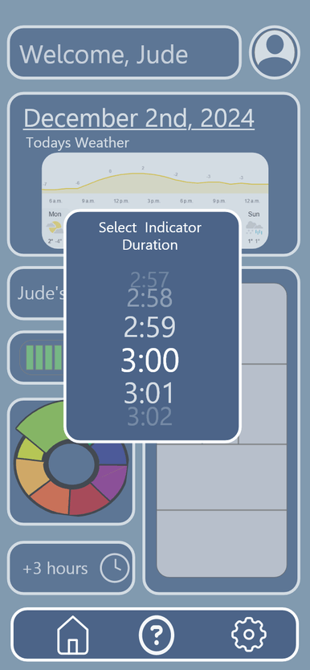
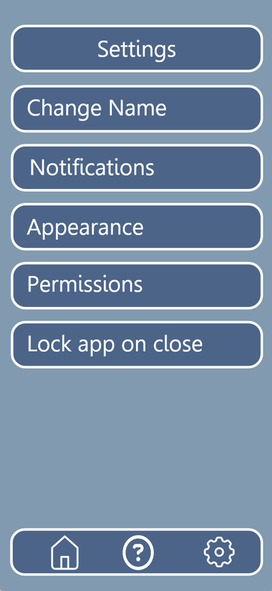
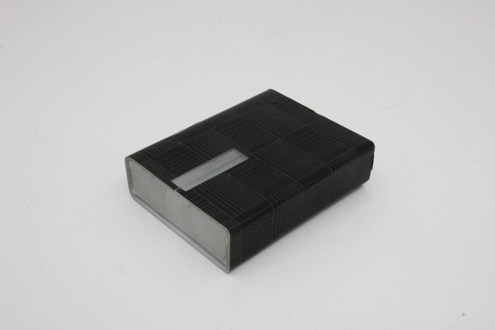
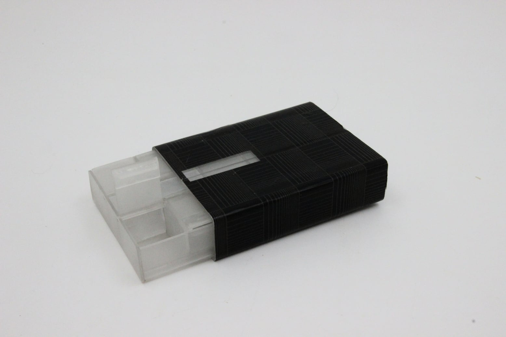
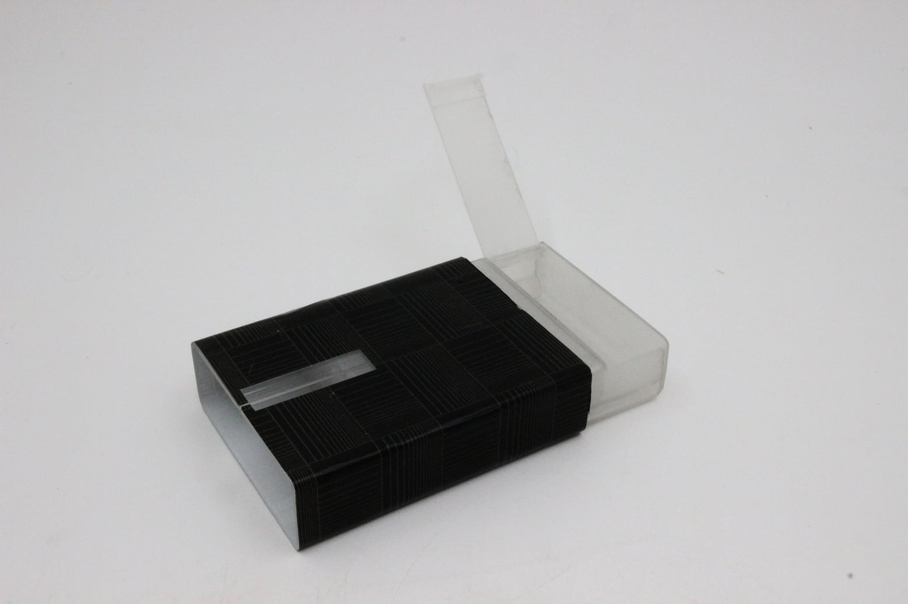
User testing on the high-fidelity prototype showed Jude intuitively using the sliding sleeve without being told how, but it also surfaced what we hadn't fully solved. In our own reflection, we were direct about the gaps rather than smoothing them over: the vinyl sleeve stood in for the leather finish Jude actually wanted (a budget constraint), pill "rattle" inside the case was never fully eliminated, and the companion app added a second device dependency that a light built entirely into the case itself could have avoided.
A collaborative team effort rather than strictly delegated roles: every member touched most stages. My specific contributions: I developed the interview questions used with fix-partner Jude, contributed to concept generation and iteration, and fabricated the final prototype.